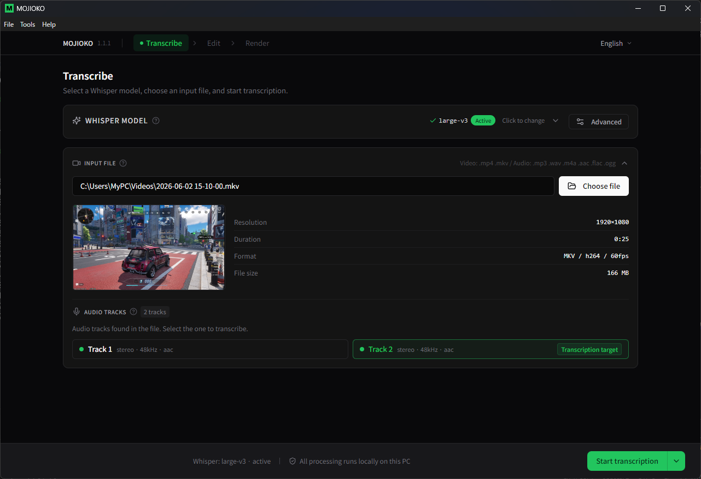
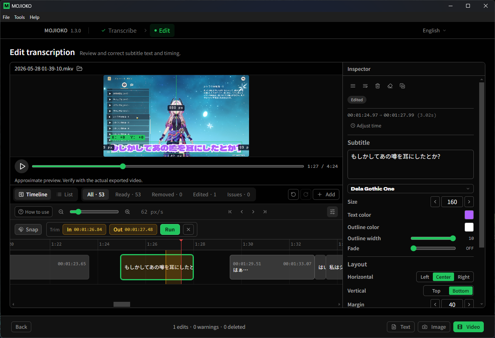
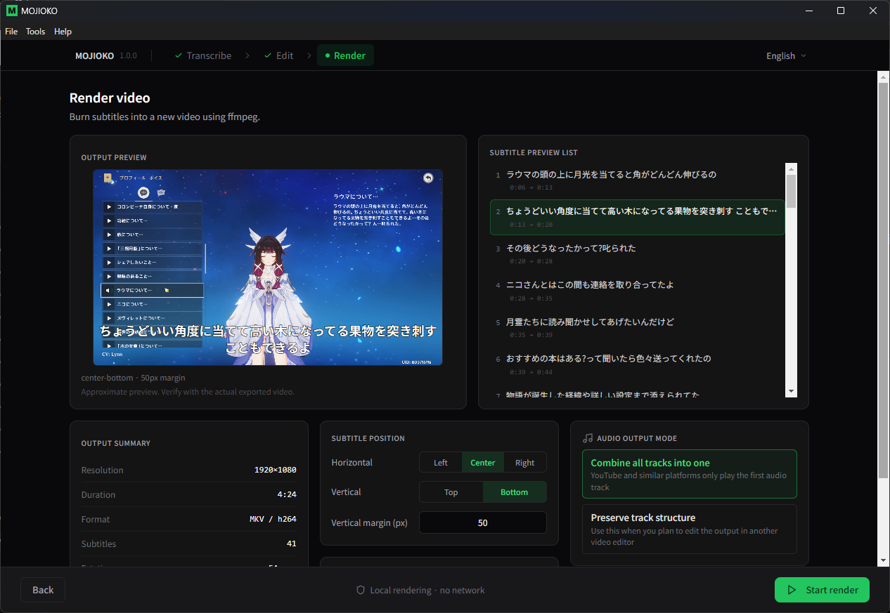
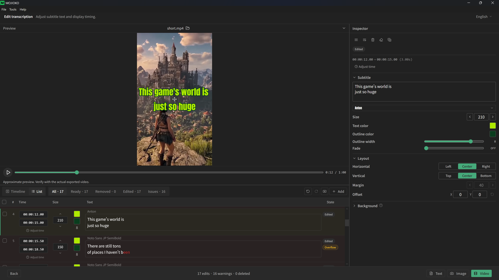

Free Auto-Subtitle Tool for Videos
DownloadFor Windows 11 64bit / Always points to the latest version
User Guide FAQ, OBS Setup, and More Feedback Bug reports & feature requests
Screenshot of Step 1Select your video file and let the Whisper model transcribe the audio automatically. Multi-track videos are supported, so you can choose which audio track to subtitle.

Screenshot of Step 2Review and refine the transcribed text and timing directly on screen. Add, delete, or adjust line timing with an intuitive interface. Export your edits as plain text or SRT files for use in other video editing software.

Screenshot of Step 3Burn your edited text directly into the video. Customize text color, outline, and fade effects to your liking. From transcription to editing to export — everything is completed within this app, entirely on your PC.

Shorts screenshotSupports vertical videos (9:16). Import various formats including MKV, MP4, MOV (iPhone videos), and AVI, then export as MP4 for direct uploading to TikTok, YouTube Shorts, and Instagram Reels.
The following features are under consideration
* Timing TBD. May be changed or canceled.
MOJIOKO is free to use. If you find it helpful, please consider supporting its development.
Global / No account needed / From $3
PayPay / Convenience store / Credit card / From ¥300
One-time or recurring / GitHub account required
All processing runs locally on your PC. Your video data is never uploaded anywhere.
Download User Guide FAQ, OBS Setup, and More Feedback Bug reports & feature requests